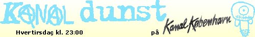

Dennis Agerblad with dunst made the TV Channel "Kanal dunst", Copenhagen. |

|
TV/Film-gruppen opstod i 2003, da vi fik en aftale i hus med Kanal
København. Gruppen bestod af: Ramona Macho, Knud Vesterskov, mAdam, Dennis Agerblad, Puta, Stimulundia, Hairwerk & The Thom. Andre dunstere medvirkede. Og vi fik hjælp af de forskellige kontakter udefra. Vi kalte os for kanal dunst og producerede i alt 6 udsendelser, hver på 27min. Hvert program blev vist 5 gange om måneden. Men det sjette program blev aldrig vist da Kanal København nægtede at sende et af indslagene hvor Ramona Macho spiser en lort. |